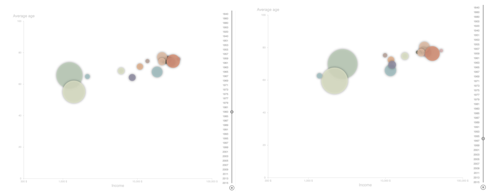

Version ZERO: Intuitive thoughts
To generalize the realtionship between the country wealth (represented by GDP per capita) and Olympic performance, the first design choice I thought of is to use scatter plot with x,y axis represent each dimension and show the correlation between these two.
The immediate questions are: How to visualize the relationship change over time? How to represent the GOOD Olympic performance?
For the time dimension, it is easily to think of using a time slider. For the representation of good Olympic performance, I got the inspiration from a work shown in the flipped class video [add link!]
Version ONE: Add More
However, the plot with only scatters on it has farely low data density. How about show the information of population on graph as well?
Recall the APT Rule, for the quantitative variable like population, I should encode it using:
position? (used...), length? (no...), angle? (no...), slope? (no...), area? (yes!)
So, I have the solution here:
Looks good! But NOT after I visualized it with code:
It can show a positive correlation between the wealth and performance. However, the trends for each country are hidden. Although the viewers can hover on the circle to see the country name, they can not intuitively catch the change for each country over time.
Also, the dot in the center of the circle is a little bit wierd...
Version TWO: Final Version
I want to show the countries! Since the country variable is a nominal one, I will use color to encode it.
I also found an example for showing the relationship between life expectancy and Income
[here]. It verifies my thoughts that the the trends can be shown with color (and it won't be messy!)

Also, I want to show the ranking of the countries more obviously, so I add a bar chart which changed with the bubble plot with time. Here it is！